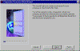
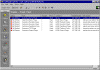
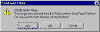
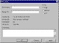
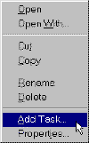
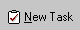

|
| ||
|
| ||
Brought to you by Inside Microsoft FrontPage, a ZD Journals publication. Click here for a free issue  .
.
One of the amazing things about building a Web site is that the number of tasks to be completed seems to grow exponentially as the number of pages in the site increases. For those of us who try to keep our "to do" list in our heads, this can present a real challenge.
You can, of course, track on paper the things you still need to do to your site, but you don't have to. FrontPage 98 contains a robust feature, the Tasks list, that maintains your to-do list electronically. Besides saving paper and keeping your desk clean, this feature actually makes it easier to get your work done. (And isn't that why you bought a computer in the first place?)
In this article, we look at how the task-list feature works. First, though, let's look at what elements a single task might involve.
If you were tracking your tasks on paper, you might simply make a list of items like "Add drop shadow to logo" or "Add art to product page." Each of these notes includes two important pieces of information: what the task actually is, which FrontPage calls the description, and what HTML page or image file is involved -- linked to in FrontPage terms.
You'd probably add a check mark beside a task once you've completed it. In FrontPage terms, this is the status of the task. You might also keep track of each task's priority rating -- low, medium, or high. Finally, if you're part of a team of Web authors, you might keep track of who each task is assigned to.
FrontPage keeps track of all this information for you. In addition, it automatically remembers the last time you modified each task. Now, let's look at how the feature works.
To quickly generate an actual task list, let's create a sample Web. To do so, launch FrontPage Explorer. When the Getting Started dialog appears, click Create a New FrontPage Web, then click OK. In the next dialog, choose Corporate Presence Wizard from the list box and type Task Test for the Web's name. Click OK to launch the wizard and create the Web.
Since this is a dummy Web, we'll accept all the default settings. So, simply click the Finish button on the first wizard page, shown in Figure A.

Click image to enlargeFigure A. We'll use the Corporate Presence Wizard to quickly generate a sample Web
FrontPage will create the Web, which consists of 14 pages and several images. It will then switch to Tasks view, which should look like Figure B.

Click image to enlargeFigure B. The sample Web includes this tasks list
Before we continue, let's explore this view for a moment. First, notice that all the information we discussed earlier is included here. Since FrontPage uses the standard Windows interface, you can sort each column by clicking on the column header. You can also resize the columns by dragging on the dividers between the headers.
Tasks are meant to be done, of course, not just sorted and looked at. So, let's complete the first task. Select this task ("Customize News Page"), then choose Do Task from the Edit menu.
When you do, FrontPage Editor will launch and the linked page, news.htm, will open. Our task is to add some public-relations text to the page, so click somewhere on the page and type Acme Industries is a great company. Then, choose Save from the File menu. Since we opened the page from the tasks list, the dialog box shown in Figure C will appear, asking if you want to mark the task as completed.

Click image to enlargeFigure C. FrontPage Editor asks if you want to mark the task as completed
At this point, you have three choices. If you click Yes, the task's status will be changed to Completed. If you click No, the status will be In Progress -- after all, you have made some progress on it. If you click Cancel, the page won't be saved at all. (You'll still have the chance to save it once you're finished.)
For now, click Yes. Then, switch back to FrontPage Explorer and notice the change in the Tasks list. As you can see, the Status column says "Completed," and the Modified Date column shows the date and time when you saved the page.
One point is important here. If we had opened news.htm in any other way (such as by choosing Open . . . from the File menu), we wouldn't have gotten the opportunity to mark the task completed.
Sooner or later, of course, you'll want to make a note of your own tasks. For example, imagine that you need to confirm an E-mail address that you've included on one of your pages. Let's see how this process works.
Open the services.htm page, then scroll down to the bottom. As you can see, the company's Webmaster is listed as "someone@microsoft.com." Chances are, this is not your Webmaster's name. So, we'll add a reminder that we need to put the correct address on this page.
Choose Add Task . . . from the Edit menu. When you do, the dialog box shown in Figure D will appear.

Click image to enlargeFigure D. The New Task dialog lets you create a task linked to the current page
Type Fix E-mail in the Task Name field and your name in the Assigned To field. Leave the priority setting at High. Finally, in the Description field, type Insert the Webmaster's correct E-mail address. Now, click OK to create the task.
When you ready to complete the task, just choose Do Task from the Edit menu as we did before. You can also double-click the task to open the Task Details dialog box (which is almost identical to the New Task dialog box). This dialog lets you modify the task and also includes a Do Task button.
Besides linking tasks to HTML pages, you can also link them to image files. To do so, right-click the image in the All Files or Folders view in FrontPage Explorer. In the Context menu that appears, shown in Figure E, choose Add Task . . ..

Click image to enlargeFigure E. You can link a task directly to an image file from the Context menu
The New Task dialog will appear, and you can define the task as before. When you actually do the task, however, FrontPage will launch Image Composer and open the image for editing.
Unfortunately, when you edit and save the image, FrontPage won't know that you've completed the task. To mark it as done, right-click on it in the Tasks list and choose Mark Complete from the context menu.
In Tasks view, you've probably noticed the New Task button, shown in Figure F. As you might expect, this button lets you create a new task. This task won't be linked to a specific page, however. So, you'd probably be better off creating tasks as we did above.

Figure F. The New Task button lets you create a task directly from Tasks view
On the View menu is a command called Task History. Choosing this command will either hide or show the completed tasks on your list. (Hide them if your task list gets too long; show them if you want to reassure yourself that you've made progress!)
The View menu also includes a Delete . . . command, which you can use to delete any task, completed or not. You can't undo a delete, so be careful with this command.
Web sites by their very nature are works in progress. And that means that there's always work to be done. FrontPage's tasks feature makes it easy for you to keep track of what you need to do on your site. In this article, we've shown you how to use this valuable feature.
Did you find this material useful? Gripes? Compliments? Suggestions for other articles? Write us!
© 1999 Microsoft Corporation. All rights reserved. Terms of use.